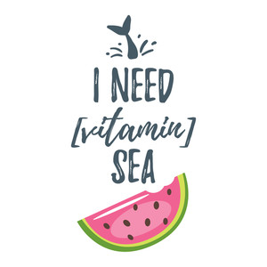

<section class="about-section">
  <div class="container">
    <main>
      <div class="content-wrapper">
        <div class="image">
          
        </div>
        <div class="text-box">
          <h2 class="about-heading">
            I'M a Creative <span>Web Devloper</span>
          </h2>
          <p>
            I'm self-motivated with a passion for learning new and improved
            techniques. A pleasure to work with very clean, strong design skills
            with an appreciation for UX and UI. I am seeking hard to bring up
            new and fresh Ideas and improve creative thinking. Each project is
            undertaken with the most up-to-date and relevant programming
            foundations available
          </p>
          <button mat-raised-button class="btn" routerLink="/" fragment="contacts">
            Hire Me
          </button>
        </div>
      </div>
    </main>
  </div>
</section>
